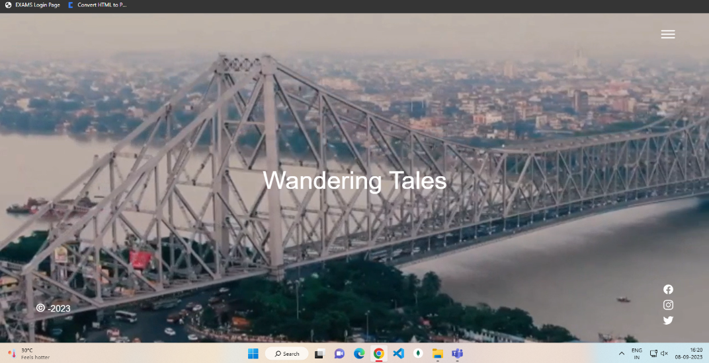
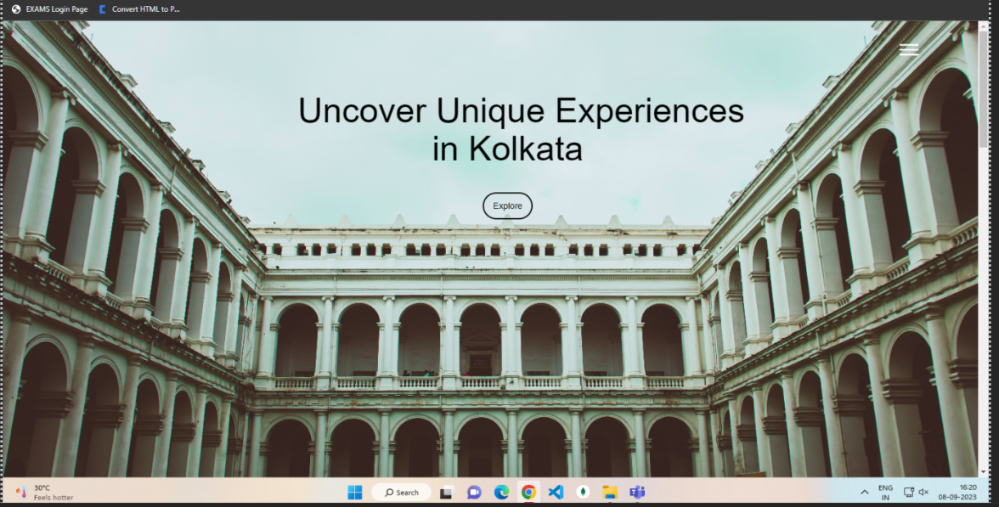
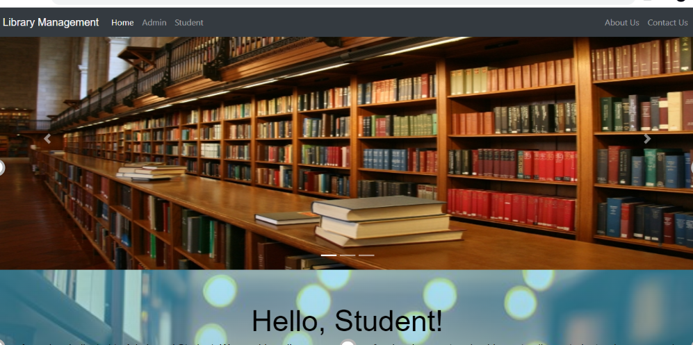

About the Project
Welcome to My Project - I'm Describing briefly what my project is about and what makes it unique.
Projects
Module 1

In module 1 i had worked on the topic Server, DSL Modem, Cloud Configuration on Cisco Packet Tracerthe process of setting up a computer lab using Cisco Packet Tracer, a simulation tool designed for network and system modeling. The lab design encompasses network architecture, hardware configuration, and software setup to create a comprehensive learning environment.Module 2 & 3


I did project on wandring tales with my team the project was all about kolkata The "Wandering Tales” Website Project is a comprehensive ultimate guide to uncovering the hidden gems of any town or city (Kolkata). Discover secret gardens, historical landmarks, vibrant markets, and much more. Get ready to step away from the crowds and immerse yourself in the beauty of these hidden treasures. Each dish is accompanied by a description, ingredients, and even the price range, ensuring you have all the information you need to make the most delicious choices.Module 4


In module 4 me and my team fireflies did project work on Library management there The library Management System is a web-based application built using the Django web framework, designed to streamline and automate various aspects of library management. This system facilitates efficient HR and administrative operations by providing a user-friendly interface for managing student data, attendance, leave requests, and performance evaluations.Module 5

In module 5 i had done my project on Indian Weather Repository by jupyter notebook it aims to develop a comprehensive and centralized platform for managing, analyzing, and disseminating weather-related data and forecasts across India. The repository seeks to address the existing challenges in weather information management and enhance accessibility for various stakeholders.
Get Involved
Interested in contributing or trying out our project? Contact me or visit my GitHub repository.
https://github.com/aashikaraj/aashikaraj.git